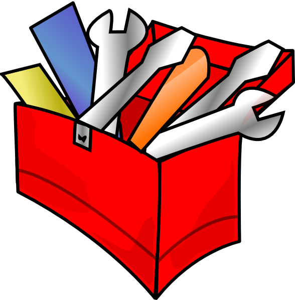

Navigate to src/app/Flashphoto/src for adding a tool there, or navigate to src/app/MIA/src to add a tool to that program instead.
Create a .cc file with the desired tool name.
Navigate to the include folder (within the same directory as the .cc document). Create a .h file that has the same name as the .cc file you just created.
We will use Pencil.h and Pencil.cc for our example.
Write the .cc and .h files you created. Below is a template of how we would implement our example tool.
Here is what Pencil.h would look like:
#ifndef SRC_APP_FLASHPHOTO_SRC_INCLUDE_T_PENCIL_H_
#define SRC_APP_FLASHPHOTO_SRC_INCLUDE_T_PENCIL_H_
#include "lib/libimgtools/src/include/tool.h"
namespace image_tools {
class TPencil : public Tool {
public:
TPencil(void);
// You can change the size of the tool, the color, etc.
ColorData color_blend_math(
float mask_pixel_amount,
ColorData tool_color,
ColorData current_color,
ColorData background_color);
std::string name(void) { return "Pencil"; }
};
} /* namespace image_tools */
#endif // SRC_APP_FLASHPHOTO_SRC_INCLUDE_T_PENCIL_H_
Here is what Pencil.cc would look like after a constructor and delete method:
#include "include/drawing_tool.h"
#include "include/Pencil.h"
namespace image_tools {
class PencilTool : public DrawingTool {
public:
PencilTool(void);
~PencilTool(void);
private:
};
} // namespace image_tools
#endif // INCLUDE_PENCIL_H_
Navigate to src/lib/libimgtools/src/tool_factory.cc
In the switch statement, add a new case.
This case should be TOOL_(name of tool): Our tool, Pencil, would be case TOOL_PENCIL:
Underneath the case, add tool = new T(tool name)(). Our example would be tool = new TPencil();
Underneath this, add break;
Our Example:
case TOOL_PENCIL:
tool = new TPencil();
break;
Navigate to src/lib/libimgtools/src/include/tool_factory.h
There is a variable called NUMTOOLS. Increment this value by 1 from what it currently is.
Above this, add the new tool to the list. Give it a valid index between 0 and (NUMTOOLS -1) that is not already in used by the tools above.
After Pencil has been added:
enum TOOLS {
TOOL_PEN = 0,
TOOL_ERASER = 1,
TOOL_SPRAYCAN = 2,
TOOL_CALLIGRAPHYPEN = 3,
TOOL_HIGHLIGHTER = 4,
TOOL_STAMP = 5,
TOOL_BLUR = 6,
TOOL_CHALK = 7,
TOOL_PENCIL = 8,
NUMTOOLS = 9
};
Before Pencil has been added:
enum TOOLS {
TOOL_PEN = 0,
TOOL_ERASER = 1,
TOOL_SPRAYCAN = 2,
TOOL_CALLIGRAPHYPEN = 3,
TOOL_HIGHLIGHTER = 4,
TOOL_STAMP = 5,
TOOL_BLUR = 6,
TOOL_CHALK = 7,
NUMTOOLS = 8
};
Congratulations! You've added a tool to the program.